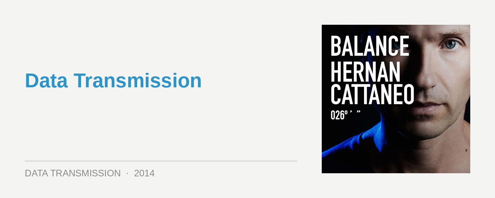

Hernan Cattaneo – Balance 026
Label: BalanceScore: 8/10
There’s a certain appeal to Argentinian veteran Hernan Cattaneo that inspires unquestioning devotion in his fans. Is it that regal way he looks out from his press shots, with just a hint of a smile? The beautiful locks adorning his classic Latin American good looks? It’s been also oft been observed that, yes indeed, he does strike a passing resemblance to Jesus Christ himself.
Absurd fanboi worship aside, Hernan’s enduing appeal naturally has everything to do with his tireless devotion to unearthing those obscure records with just the right balance of deepness, groove and melody. Not to mention his maestro grasp of how to deliver a marathon DJ set. Personally I’m of the opinion that the ‘progressive house’ label has never done him justice. That said, what’s most surprising about his entry into the revered ‘Balance’ series is how much it embraces a classic progressive aesthetic. It’s all a matter of impeccable timing.
“It’s been great years for melodies, and thankfully even German techno producers are not afraid to use them anymore. As a result, I think the music now is the best since the early 2000s.” This year we’ve even seen Innervisions heavies Âme and Dixon embracing their melodic side, alongside Kompakt luminaires Kölsch and Gui Boratto. So the time is right for Balance 026.
Getting started though, the first disc is a deceptively laidback affair, a fairly standard “chillout” mix that you often get with these double-disc compilations. A tempered mix of chilled breaks, lush house and midtempo progressive. Hernan has a natural affinity with these kinds of sounds, and he curates this mix with the style you’d expect. However, it’s also unremarkable. There’s just no escaping the fact the real action is found on the second ‘club’ mix.
Hernan starts things off deep, with a dash of menace from Soundexile to offer a foreboding sense of what’s to come. A few vocals are allowed to slip in as he ratchets up the tension, on what starts and ends as a beautifully programmed mix. What you won’t be prepared for though is how much the he strikes a match and lights the tinderbox at the 30 minute mark.
The rolling Latin percussion and lusher-than-lush textures of Cid Inc’s ‘Fragile Circle’ marks the commencement of a progressive bombing run that could flatten a stadium of hoary old prog devotees (you know exactly who you are). Is that the hint of a trance riff in the breakdown of Khen’s ‘Sweet Break Up’? We haven’t witnessed such a divine display of pure, peaktime progressive power since Global Underground took Sasha to Ibiza in the late 90s.
That said, all this talk of how “classic” ‘Balance 026’ is doesn’t do justice to how modern all of Hernan’s selections are. These records channel the traditional sound of progressive in their energy, rather than any kind of stodgy old production techniques. This is top-notch house that’s curated and programmed with a veteran’s touch, and the second mix in particular slides in perfectly with the zeitgeist of underground house in 2014.
So what are you waiting for? Come and party with Hernan like it’s 1999.